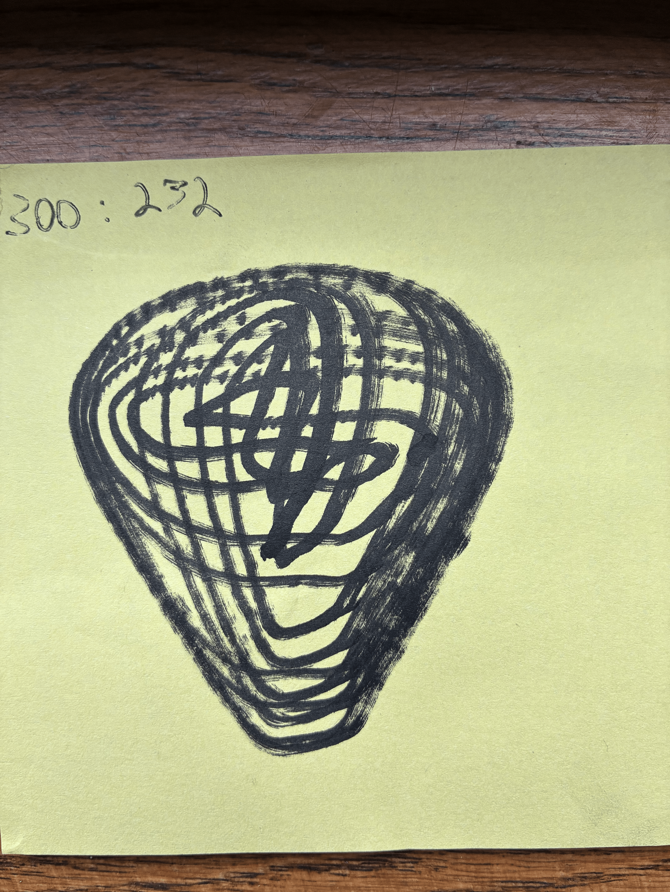
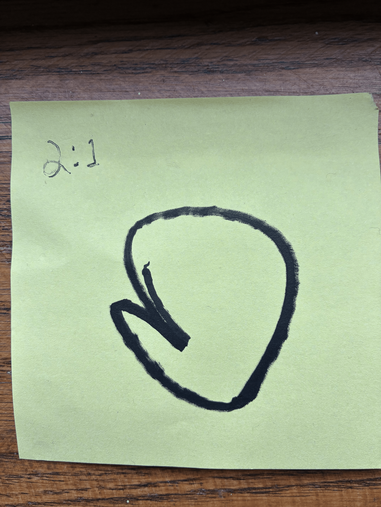
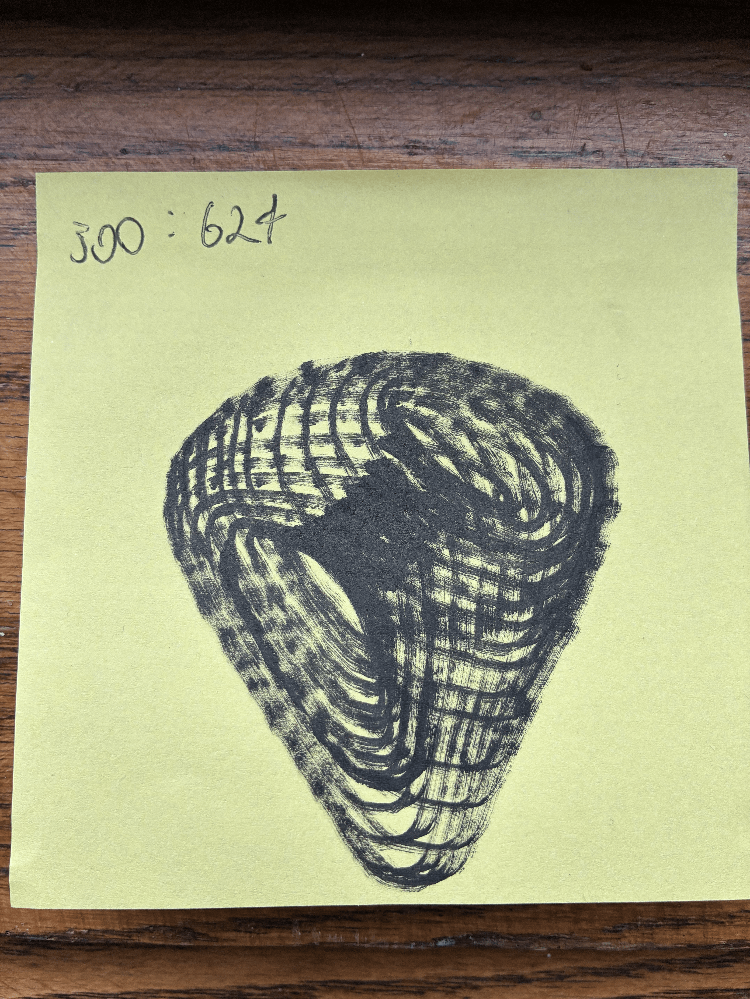

For this project, we were tasked with craeting a spirograph out of Legos that could create cool spiral images. The unique twist I tried to put on this one was that instead of using a single arm, I decided to to use two motors and rotate them at different speeds to create different images instead of rotating the base.
I call my design the DoubleDutchSpiro5000. Below are some of the images it created!


